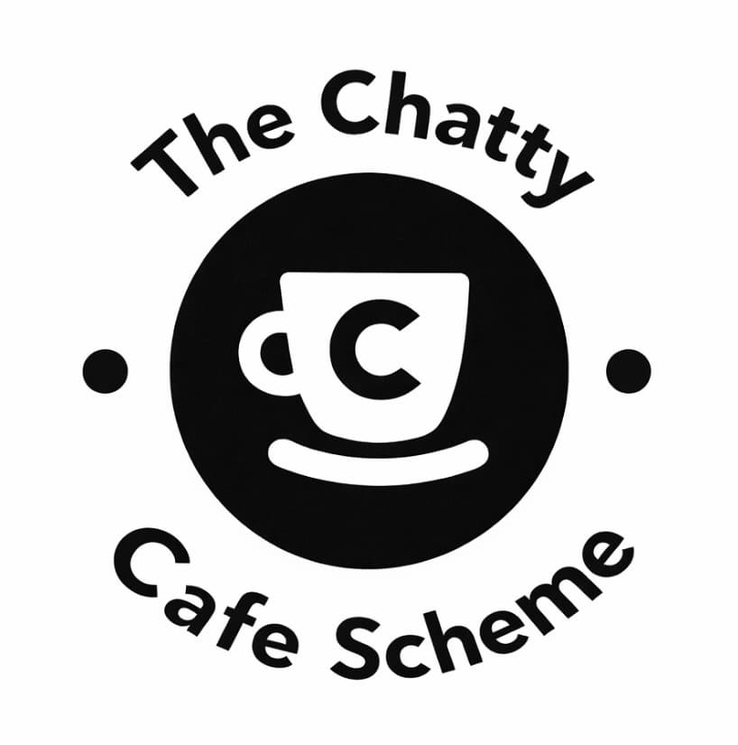
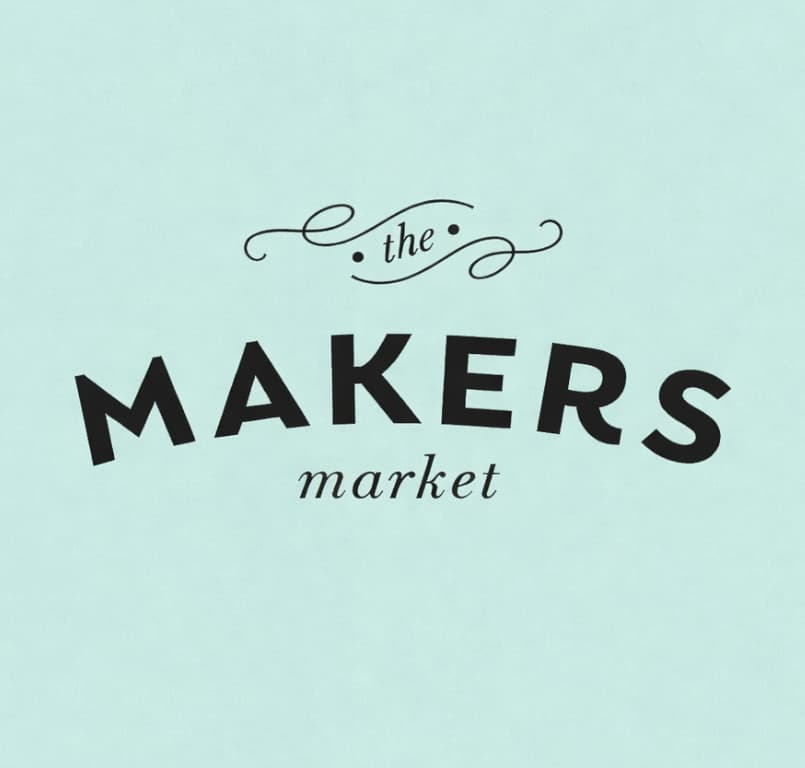
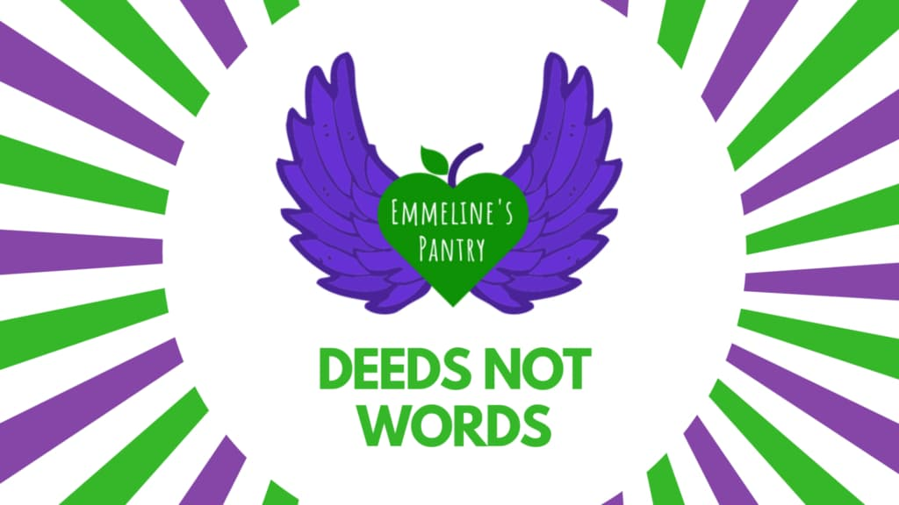
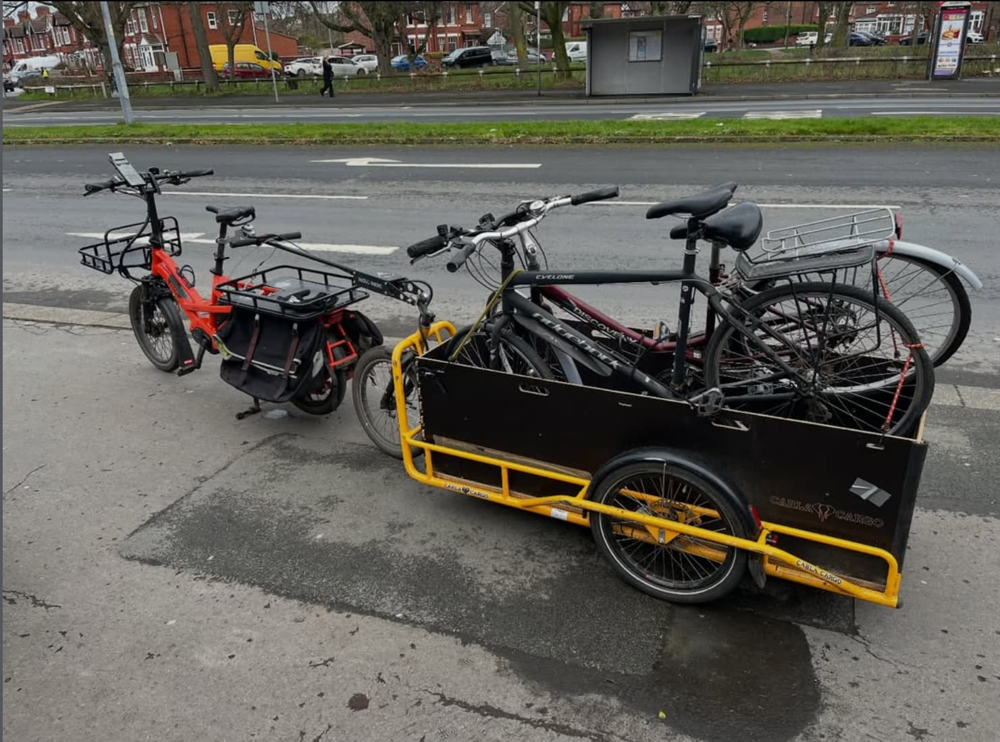
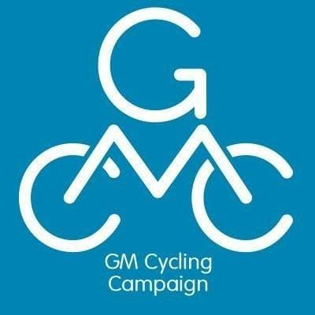
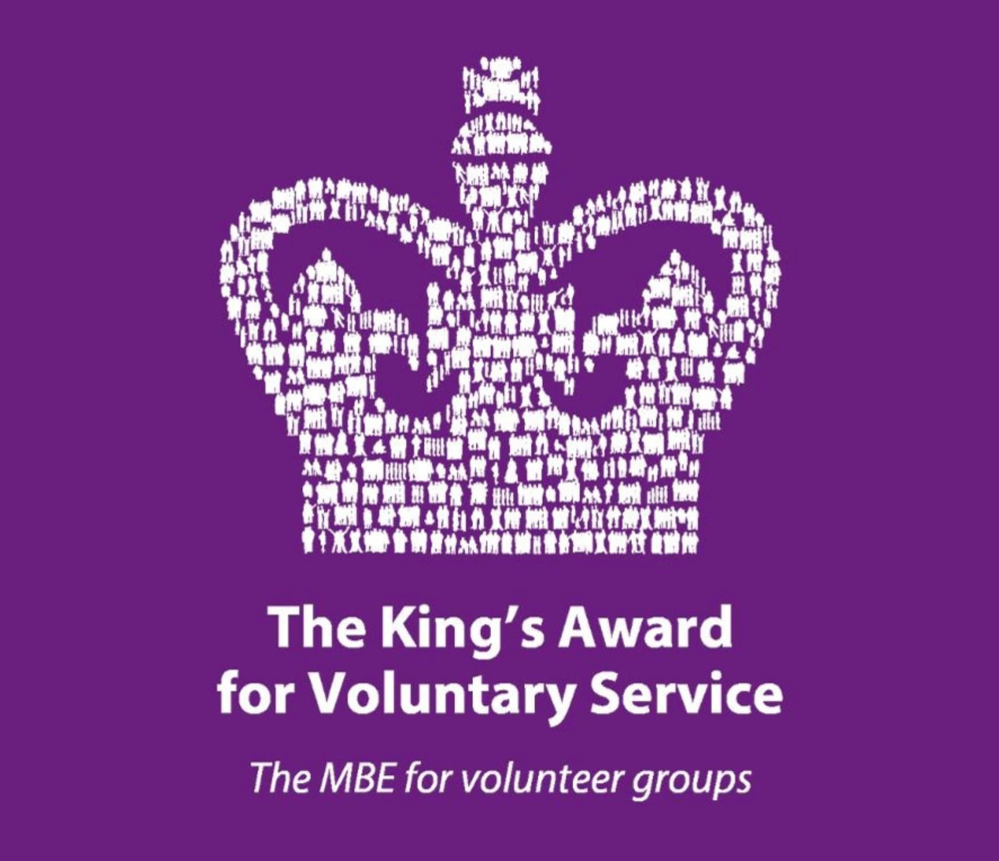
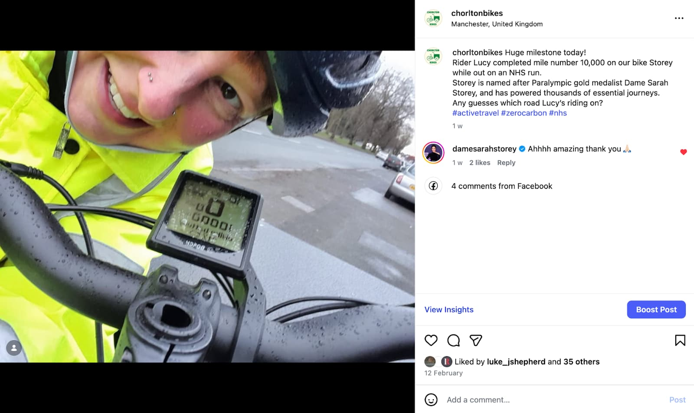

Hello Friends and Members of Chorlton Bikes,
We're really glad you're here. This newsletter is a chance to share what we've been up to – our riders, our partners, and the difference we're making together in Chorlton and beyond. We hope you enjoy catching up with us.
February
2026
As the weather thaws and the sun sets a little later, our riders and volunteers have seen out February with some standout updates.

Expanded Trishaw Rides
- 🛺 Our regular Wednesday rides with Together Dementia in Alexandra Park have endured the inclement weather to provide a cycling experience for people who may not usually have had access to travelling on 2 or 3 wheels.
- 🛺 We are delighted to be extending our trishaw rides to Tuesdays to support the incredible Chatty Cafe scheme at Alexandra Park, reducing loneliness and isolation. Our rider Martin trained as a pilot this month.
- 🛺 We are seeking more volunteer riders (pilots) for this scheme – please get in touch if you or someone you know could help.
- 🛺 We are delighted to have had our first wedding trishaw booking for June this year! If you would like to hire the trishaw for a wedding or any celebratory event, please contact us via WhatsApp or email – details are on our website.

Makers Market in March
- 🛒 We will be at Chorlton Makers Market on 21st March with our friends at Walk Ride Chorlton to promote active travel initiatives and the community work we're both leading.
- 🛒 Please drop by and say hello!

Community Ride 2026
- 🚴 We had our first planning meeting at Boiler House on Wednesday 25th, with great ideas for different themes and routes.
- 🚴 We have been in dialogue with local councillors to avoid any clashes with other local events in the area.

Emmeline's Pantry
- 💜 One of our main partnerships is with Emmeline's Pantry, who support women who have experienced domestic violence and food insecurity.
- 💜 We are delighted to have extended our partnership – Emmeline's have also funded an extra trailer to support the collection of food surplus from local supermarkets including Aldi, Co-op, Barbakan and M&S.

Welcome New Riders
- 👋 This month we were joined by new riders Peter and Tom, and rejoined by Sam.
- 👋 They had a brief induction on the bikes and shadowed a ride with an experienced rider, ready to take on voluntary and/or paid jobs from now on.

Bikes4Refugees
- ♻️ In February we moved 14 bikes between the bike hubs in Chorlton and from local resident donations.
- ♻️ If you have a pre-loved bike that is no longer in use, or know someone who has and might like to donate it to this amazing charity, please get in touch and we can come to collect it.

Donation from GMCC
- 🎁 The Greater Manchester Cycling Campaign (formerly Sprocket) have kindly donated to support our community work after their members made the difficult decision to wind down and allocate their funds to organisations who met their objectives.
- 🎁 We are incredibly grateful for this donation – it will be a great help to enable us to continue and extend our community initiatives.

King's Award Assessment
- 👑 We were visited by Professor Saul Becker on Friday 27th February to assess our nomination for the King's Award for Voluntary Service.
- 👑 Many thanks to Nick, Abbie, Glynis, Lucy, Anna, Tom, Liam, Alison, Gary, Tim and Peter for supporting our nomination with stories, anecdotes, statistics and lunch!

Storey's 10,000th Mile!
- 🏆 All of the cargo bikes at Boiler House are named after famous cyclists. This month our longest-serving rider, Lucy, made the 10,000th mile on 'Storey' – named after Dame Sarah Storey.
- 🏆 We marked the occasion on social media and Dame Sarah gave a message of approval!
We need your help
- 📋 Does anyone have expertise in accounting for small VAT-registered businesses and/or generating annual accounts in QuickBooks? We are looking for someone on a voluntary basis to help reduce our costs in the future.
Thank You
Thank you to everyone for the energy, care and commitment that's driving all of this forward. February has been another busy month – and there's plenty more to come. 🚴♀️💚